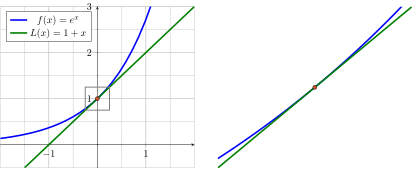
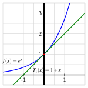
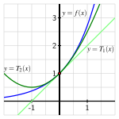
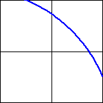

How well does the tangent line at \(a = 0\) approximate the function \(f(x) = e^x\) near \(a = 0\text{?}\)
Can we find higher degree polynomials that approximate \(f(x) = e^x\) near \(a = 0\) more effectively than the approximation generated by the tangent line?
How does the degree of the polynomial impact the accuracy of the approximation of \(f(x) = e^x\text{?}\)
Early in our study of calculus in Section 1.8, we learned that if a function \(f\) has a derivative at a fixed value \(x=a\text{,}\) when we zoom in on its graph near \((a,f(a))\text{,}\) the function looks linear. Indeed, such a function is differentiable, and we know that near a fixed input value \(a\text{,}\)
where \(L\) is the tangent line approximation to \(f\) at \(a\text{.}\)
In this section, we focus on the function \(f(x) = e^x\) and investigate how we can approximate its value near \(a = 0\) using other basic functions.
Preview Activity8.1.1.
Consider the function \(f(x) = e^x\) near \(a = 0\text{.}\) We know that \(f’(x) = e^x\text{,}\) so \(f’(0) = 1\text{;}\) along with the fact that \(f(0) = 1\text{,}\) it follows that the tangent line approximation is
Here is the function \(f(x) = e^x\) and its tangent line \(L(x) = 1 + x\) near the point \((0, f(0))\text{.}\)

(a)
Build a spreadsheet that computes the difference between \(f(x)\) and \(L(x)\) for \(x\)-values between \(-1\) and \(1\text{,}\) spaced \(0.1\) units apart. Note: we will revisit this spreadsheet for additional computations in Activity 8.1.4, so it would be ideal if you save your work electronically in place you can find it later.
Your spreadsheet should start like the following table:
Row
\(\Delta x\)
\(x\)
\(f(x) = e^x\)
\(L(x) = 1 + x\)
0
\(0.1\)
\(-1.0\)
\(0.36787\ldots\)
\(0.0\)
1
\(0.1\)
\(-0.9\)
\(0.40656\ldots\)
\(0.1\)
2
\(0.1\)
\(-0.8\)
\(0.44932\ldots\)
\(0.2\)
⋮
⋮
⋮
⋮
⋮
Then Row 14 is:
Row
\(\Delta x\)
\(x\)
\(f(x) = e^x\)
\(L(x) = 1 + x\)
14
(b)
Next, add a column to your spreadsheet that computes \(\lvert f(x)-L(x)\rvert\text{.}\) What is the new entry in Row 14?
How do the differences between \(f(x)\) and \(L(x)\) change as you move across the interval from \(-1\) to \(1\text{?}\)
No changes.
Differences get smaller and smaller.
Differences get larger and larger.
Differences get larger the farther away \(x\) is from \(0\text{.}\)
(c)
For about what values of \(x\) is it true that \(\lvert f(x) - L(x)\rvert \lt 0.1\text{?}\)
(d)
Notice that the curvature in \(f(x) = e^x\) is what makes the linear approximation \(L(x)\) lose accuracy. What kind of simple function might do a better job approximating \(e^x\) than a linear one?
quadratic
sine
cosine
exponential
Subsection8.1.1Finding a quadratic approximation
In Preview Activity 8.1.1, we found that the error in the tangent line approximation of \(f(x) = e^x\) at \(a = 0\) grows significantly as we consider \(x\)-values further and further from \(0\text{.}\) This is due to the fact that the tangent line is straight while the function \(f(x) = e^x\) has some curvature. So, we are going to try to find a quadratic approximation whose curvature matches that of \(f(x) = e^x\) at the point of tangency.
While we have usually used the notation “\(L(x)\)” for the tangent line, in what follows we will instead write “\(T_1(x)\)”, and think of this as “the degree \(1\) approximation”. In a similar way, we will write \(T_2(x)\) for the quadratic approximation.
Recall that for any function \(f\) that has a derivative at \(a=0\text{,}\) its tangent line approximation at \(a=0\) is
Moreover, the functions \(T_1\) and \(f\) have two exact values in common. First, their function values agree at the point of tangency: \(T_1(0) = f(0)\text{.}\) And second, since \(T_1(x)\) is a linear function whose slope is \(f'(0)\text{,}\) it is also true that their derivative values agree at the point of tangency: \(T_1'(0) = f'(0)\text{.}\)
To generate a quadratic function that approximates \(f\) near \(a = 0\text{,}\) we choose to have this quadratic function not only share the same function value and derivative value as \(f\) at \(a=0\text{,}\) but also the same second 1 derivative value at \(a=0\text{,}\) in order to match the concavity or curvature of \(f\text{.}\) In other words, we are adding a term to the linear approximation that gives the same amount of curvature as the function \(f\text{.}\)
We can state these requirements more formally as follows: we seek a function \(T_2(x)\) of the form
\(T_2(0) = f(0)\text{,}\) so \(T_2\) and \(f\) share the same height at \(a = 0\text{;}\)
\(T_2'(0) = f'(0)\text{,}\) so \(T_2\) and \(f\) share the same slope at \(a = 0\text{;}\)
\(T_2''(0) = f''(0)\text{,}\) so \(T_2\) and \(f\) share the same concavity at \(a = 0\text{.}\)
In Activity 8.1.2, we explore how these three requirements determine \(c_0\text{,}\)\(c_1\text{,}\) and \(c_2\) in \(T_2(x)\) for the function \(f(x) = e^x\text{.}\)
Activity8.1.2.
Let \(f(x)=e^x\) and \(T_2(x) = c_0 + c_1 x + c_2 x^2\text{.}\) We seek numerical values for the constants \(c_0\text{,}\)\(c_1\text{,}\) and \(c_2\) so that \(f(0)=T_2(0)\text{,}\)\(f'(0)=T_2'(0)\text{,}\) and \(f''(0)=T_2''(0)\text{.}\)
Note that since \(c_0\text{,}\)\(c_1\text{,}\) and \(c_2\) are constants, if we take the derivative of the quadratic function \(T_2\) using the sum and constant multiple rules, it follows that \(T_2'(x) = c_1 + 2 c_2 x\text{.}\)
What is \(T_2''(x)\text{?}\)
Recall that \(f(x) = e^x\text{.}\) Determine \(f'(x)\) and \(f''(x)\text{.}\)
Enter the formulas you’ve determined for \(f(x)\text{,}\)\(f'(x)\text{,}\)\(f''(x)\text{,}\)\(T_2(x)\text{,}\)\(T_2'(x)\text{,}\) and \(T_2''(x)\) in Table 8.1.1.
Table8.1.1.Formulas for \(f(x)\) and \(T_2(x)\) and their derivatives.
\(f(x)=\)
\(T_2(x)=\)
\(f'(x)=\)
\(T_2'(x)=\)
\(f''(x)=\)
\(T_2''(x)=\)
Next, observe that since \(T_2(x) = c_0 + c_1 x + c_2 x^2\text{,}\) it follows that \(T_2(0) = c_0\text{.}\) Reason similarly to determine the values of \(T_2'(0)\) and \(T_2''(0)\text{,}\) as well as those of \(f(0)\text{,}\)\(f'(0)\text{,}\) and \(f''(0)\) and enter these 6 values appropriately in Table 8.1.2.
Table8.1.2.Values of \(f(x)\) and \(T_2(x)\) and their derivatives at \(x = 0\text{.}\)
\(f(0)=\)
\(T_2(0)=\)
\(f'(0)=\)
\(T_2'(0)=\)
\(f''(0)=\)
\(T_2''(0)=\)
Now, recall that we want the function values, first derivative values, and second derivative values of \(f\) and \(T_2\) to match at \(a = 0\text{.}\) What does \(T_2(0) = f(0)\) tell us about the value of \(c_0\text{?}\) What does \(T_2'(0) = f'(0)\) tell us about \(c_1\text{?}\) How can we also find \(c_2\text{?}\)
Having now determined the numerical values of \(c_0\text{,}\)\(c_1\text{,}\) and \(c_2\text{,}\) plot the function \(T_2(x) = c_0 + c_1 x + c_2 x^2\) along with \(f(x)=e^x\) and \(T_1(x)=1+x\) in Figure 8.1.3. What do you notice? For about which values of \(x\) is \(|f(x)-T_2(x)| \lt 0.1\text{?}\)

Figure8.1.3.The function \(f(x)=e^x\) and its tangent line \(T_1(x)=1+x\) near the point \((0,f(0))\text{.}\)
While we will develop this idea more formally in Section 8.2, the polynomial \(T_2(x)\) that we found in Activity 8.1.2 is called the “degree 2 Taylor polynomial of \(f\) centered at \(a=0\)”.
Subsection8.1.2Over and over again
A remarkable feature of mathematics is that when a process effectively generates an approximation, doing that same process again (perhaps with some slight modifications) often improves the approximation. In Activity 8.1.2, we found a quadratic approximation of \(f(x)=e^x\) near the point \((0,f(0))\) that results in an improvement over the linear approximation of \(f\text{.}\) It is reasonable to hope that a degree 3 polynomial approximation of \(f(x) = e^x\) will be even better.
To investigate, we seek a degree \(3\) polynomial \(T_3(x)\) of the form
\(T_3(0) = f(0)\text{,}\)\(T_3'(0) = f'(0)\text{,}\) and \(T_3''(0) = f''(0)\) so that \(T_3\) and \(f\) share the same function value, first derivative value, and second derivative value at \(a = 0\text{;}\) plus the additional condition that
\(T_3'''(0) = f'''(0)\text{,}\) so \(T_3\) and \(f\) share the same third 2 derivative value at \(a = 0\text{.}\)
Like in our work with \(T_2\text{,}\) we observe that since \(T_3\) is a polynomial, its derivatives are straightforward to compute. For instance,
We continue our investigation of this new approximation of \(f(x) = e^x\) in Activity 8.1.3, where we work to determine the values of \(k_0\text{,}\)\(k_1\text{,}\)\(k_2\text{,}\) and \(k_3\) plus explore how well \(T_3(x)\) approximates \(f(x)\) near \(a = 0\text{.}\)
Activity8.1.3.
Let \(f(x)=e^x\) and \(T_3(x) = k_0 + k_1 x + k_2 x^2 + k_3 x^3\text{.}\)
By computing the second and third derivatives of \(T_3(x)\) and evaluating \(T_3\) and its derivatives at \(a = 0\text{,}\) fill in the blank entries in Table 8.1.6.
Table8.1.6.Formulas and values for \(f(x)\) and \(T_3(x)\) and their derivatives.
\(f(x)=\)
\(e^x\)
\(T_3(x)=\)
\(k_0 + k_1 x + k_2 x^2 + k_3 x^3\)
\(f'(x)=\)
\(e^x\)
\(T_3'(x)=\)
\(k_1 + 2 k_2 x + 3 k_3 x^2\)
\(f''(x)=\)
\(e^x\)
\(T_3''(x)=\)
\(f'''(x)=\)
\(e^x\)
\(T_3'''(x)=\)
\(f(0)=\)
\(1\)
\(T_3(0)=\)
\(k_0\)
\(f'(0)=\)
\(1\)
\(T_3'(0)=\)
\(k_1\)
\(f''(0)=\)
\(1\)
\(T_3''(0)=\)
\(f'''(0)=\)
\(1\)
\(T_3'''(0)=\)
Next, recall that we want \(f\) and \(T_3\) to share the same function and derivative values at \(a = 0\) up to and including the third derivative. For instance, one of the four needed equations is \(T_3'(0) = f'(0)\text{.}\) What does our work in Table 8.1.6 tell us about the values of \(k_0\text{,}\)\(k_1\text{,}\)\(k_2\text{,}\) and \(k_3\text{?}\)
Having now determined the numerical values of \(k_0\text{,}\)\(k_1\text{,}\)\(k_2\text{,}\) and \(k_3\text{,}\) plot the function \(T_3(x) = k_0 + k_1 x + k_2 x^2 + k_3 x^3\) along with \(f(x)=e^x\text{,}\)\(T_1(x)=1+x\text{,}\) and \(T_2(x) = 1 + x + \frac{1}{2}x^2\) in Figure 8.1.7. What do you notice? For about which values of \(x\) is \(|f(x)-T_3(x)| \lt 0.1\text{?}\)

Figure8.1.7.The function \(f(x)=e^x\text{,}\) its tangent line \(T_1(x)=1+x\text{,}\) and the quadratic approximation \(T_2(x) = 1 + x + \frac{1}{2}x^2\) near the point \((0,f(0))\text{.}\)
What if we wanted a fourth degree polynomial approximation to \(f(x) = e^x\) near \(a = 0\text{?}\) Based on the patterns you’ve observed in \(T_1\text{,}\)\(T_2\text{,}\) and \(T_3\text{,}\) conjecture values for the constants \(w_0, \ldots, w_4\) for a function \(T_4\) of the form
that satisfies \(T_4(0) = f(0)\text{,}\)\(T_4'(0) = f'(0)\text{,}\)\(\ldots\text{,}\)\(T_4^{(4)}(0) = f^{(4)}(0)\text{.}\) Add this function \(T_4\) to your earlier work in Figure 8.1.7. What do you notice?
Like in the quadratic case, we’ll call 3 the cubic polynomial \(T_3(x)\) the “degree 3 Taylor polynomial of \(f\) centered at \(a=0\)”.
Subsection8.1.3As the degree of the approximation increases
Our work so far suggests that, given the function \(f(x)=e^x\text{,}\) we can find a degree \(n\) polynomial approximation, \(T_n\text{,}\) that satisfies
Moreover, since it appears that increasing the degree \(n\) improves the accuracy of the approximation, we now want to investigate further what happens as \(n\) increases.
So far, we have found the following approximations for \(f(x) = e^x\) near \(a = 0\text{:}\)
\(\displaystyle T_1(x) = 1 + x\)
\(\displaystyle T_2(x) = 1 + x + \frac{1}{2}x^2\)
\(\displaystyle T_3(x) = 1 + x + \frac{1}{2}x^2 + \frac{1}{6}x^3\)
In Section 8.2, we will develop a general approach to finding the coefficient of \(x^n\) in the degree \(n\) approximation; for now, we will use the \(4\) functions above and study further how the accuracy of the approximation changes with the degree.
Activity8.1.4.
We continue to work with \(f(x)=e^x\) and the four approximations of degree \(1\text{,}\)\(2\text{,}\)\(3\text{,}\) and \(4\) given by \(T_1(x)\text{,}\)\(T_2(x)\text{,}\)\(T_3(x)\text{,}\) and \(T_4(x)\text{.}\)
In Preview Activity 8.1.1, we built a spreadsheet that computed the differences between \(f(x)\) and \(T_1(x)\) for \(x\)-values between \(-1\) and \(1\text{,}\) spaced \(0.1\) units apart. Your spreadsheet started like the one shown in Preview Activity 8.1.1.
Next, we build an updated version of this spreadsheet that computes similar differences between \(f\) and the three higher degree approximations we have found. In particular, we now want to have columns for \(\Delta x\text{,}\)\(x\text{,}\)\(f(x)\text{,}\)\(T_1(x)\text{,}\)\(T_2(x)\text{,}\)\(T_3(x)\text{,}\) and \(T_4(x)\text{,}\) plus the absolute differences \(|f(x) - T_1(x)|\text{,}\)\(|f(x) - T_2(x)|\text{,}\)\(|f(x) - T_3(x)|\text{,}\) and \(|f(x) - T_4(x)|\text{.}\)Hint: when building your entries, note that you can think of \(T_2(x)\) as \(T_2(x) = T_1(x) + \frac{1}{2}x^2\text{,}\) and similarly view \(T_3(x)\) as “\(T_2(x)\) plus one more term”.
Include at least \(5\) digits of accuracy beyond the decimal. The first seven columns of your spreadsheet might start like this:
Table8.1.10.Comparing \(f(x) = e^x\) and its degree \(1\text{,}\)\(2\text{,}\)\(3\text{,}\)\(4\) and approximations near \(a = 0\text{.}\)
\(\Delta x\)
\(x\)
\(f(x)\)
\(T_1(x)\)
\(T_2(x)\)
\(T_3(x)\)
\(T_4(x)\)
\(0.1\)
\(-1.0\)
\(0.36787\)
\(0.00000\)
\(0.50000\)
\(0.33333\)
\(0.37500\)
\(0.1\)
\(-0.9\)
\(0.40657\)
\(0.10000\)
\(0.50500\)
\(0.38350\)
\(0.41083\)
The next four columns of your spreadsheet should begin as follows:
Table8.1.11.The absolute error between \(f(x) = e^x\) and its degree \(1\text{,}\)\(2\text{,}\)\(3\text{,}\) and \(4\) approximations at \(x=-1\) and \(x=-0.9\text{.}\)
\(|f(x)-T_1(x)|\)
\(|f(x)-T_2(x)|\)
\(|f(x)-T_3(x)|\)
\(|f(x)-T_4(x)|\)
\(0.36787\)
\(0.13212\)
\(0.03454\)
\(0.00712\)
\(0.30657\)
\(0.09843\)
\(0.02307\)
\(0.00426\)
We call the value of \(|f(x) - T_2(x)|\) the absolute error of the quadratic approximation of \(f\) at the value \(x\). What is the absolute error of the quadratic approximation at \(x = -1\text{?}\) at \(x = 1\text{?}\)
What is the absolute error of the cubic (degree \(3\)) approximation, \(T_3(x)\text{,}\) at \(x = -1\text{?}\) at \(x = 1\text{?}\)
What is the absolute error of the quartic (degree \(4\)) approximation, \(T_4(x)\text{,}\) at \(x = -1\text{?}\) at \(x = 1\text{?}\)
Study your spreadsheet for trends that you notice as the value of \(x\) changes or the degree \(n\) of the approximation changes. What are your observations?
Investigate the errors in the various approximations for a wider interval of \(x\)-values. For example, you might consider starting at \(x = -2\) with \(\Delta x = 0.2\text{.}\) What do you notice?
Subsection8.1.4Summary
For the function \(f(x) = e^x\text{,}\) which bends considerably (especially for \(x > 0\)) as we move away from \(a = 0\text{,}\) the tangent line is not a very good approximation for \(x\)-values that satisfy \(|x| > 0.5\text{.}\) For example, \(|f(0.5) - e^{0.5}| \approx 0.148721\text{,}\) so the linear approximation has an absolute error of more than \(0.1\) at \(x = 0.5\text{.}\)
Using the strategy of finding a higher degree polynomial whose function and derivative values match at the selected point of tangency, we are able to find higher degree polynomials that much more effectively approximate \(f(x) = e^x\) near \(a = 0\) than the approximation generated by the tangent line. For example, using the degree \(3\) approximation \(T_3(x) = 1 + x + \frac{1}{2}x^2 + \frac{1}{6}x^3\text{,}\) we see that \(|f(x) - T_3(x)| \lt 0.01\) for all \(x\) that satisfy \(|x| \lt 0.6\text{.}\)
It appears that the degree of the polynomial impacts the accuracy of the approximation of \(f(x) = e^x\) in at least two ways: if we fix an \(x\)-value, the higher the degree of the polynomial, the more accurate the approximation. In addition, raising the degree of the polynomial approximation appears to widen the interval on which the approximation is effective.
Exercises8.1.5Exercises
1.
Suppose that \(T_2(x)=c_0+c_1x+c_2x^2\) is the second degree Taylor polynomial for the function \(f\) about \(x=0\text{.}\) What can you say about the signs of \(c_0\text{,}\)\(c_1\text{,}\)\(c_2\) if \(f\) has the graph given below?

(For each, enter \(+\) if the term is positive, and \(-\) if it is negative. Note that because this is essentially multiple choice problem it will not show which parts of your answer are correct or incorrect.)
\(c_0\) is
\(c_1\) is
\(c_2\) is
2.
The function \(f(x)\) is approximated near \(x=0\) by the second degree Taylor polynomial \(T_2(x) = -\left(1+3x+6x^{2}\right)\text{.}\)
Give values:
\(f(0) =\)
\(f'(0) =\)
\(f''(0) =\)
3.
Throughout our work in Section 8.1, we have focused on approximating the function \(f(x) = e^x\text{.}\) In this exercise, we change the function of interest to \(f(x) = \frac{1}{3}x^3 + \frac{1}{4}x^2 - 2x - 1\text{,}\) and consider the linear and quadratic approximations to \(f\) near \(a = 0\text{.}\)
Determine \(f'(x)\) and \(f''(x)\) and enter their formulas in Table 8.1.14.
Table8.1.14.Formulas for \(f(x)\) and its first two derivatives.
\(f(x)=\)
\(\frac{1}{3}x^3 + \frac{1}{4}x^2 - 2x - 1\)
\(f'(x)=\)
\(f''(x)=\)
Next, compute \(f(0)\text{,}\)\(f'(0)\text{,}\) and \(f''(0)\) and enter those values in Table 8.1.15.
Table8.1.15.Values of \(f(x)\) and its first two derivatives at \(a = 0\text{.}\)
\(f(0)=\)
\(f'(0)=\)
\(f''(0)=\)
Use your work so far to determine the formula for \(T_1(x)\text{,}\) the tangent line approximation to \(f(x)\) at \(a =0\) (which satisfies \(T_1(0) = f(0)\) and \(T_1'(0) = f'(0)\)).
Let \(T_2(x)\) be the quadratic approximation to \(f(x)\) near \(a = 0\) that satisfies \(T_2(0) = f(0)\text{,}\)\(T_2'(0) = f'(0)\text{,}\) and \(T_2''(0) = f''(0)\text{.}\) You might start by letting \(T_2(x) = c_0 + c_1 x + c_2 x^2\text{,}\) and creating an updated table like the one shown in Table 8.1.16.
Table8.1.16.Formulas and values for \(f(x)\) and \(T_2(x)\) and their first two derivatives.
\(f(x)=\)
\(\frac{1}{3}x^3 + \frac{1}{4}x^2 - 2x - 1\)
\(T_2(x)=\)
\(c_0 + c_1 x + c_2 x^2\)
\(f'(x)=\)
\(T_2'(x)=\)
\(c_1 + 2 c_2 x\)
\(f''(x)=\)
\(T_2''(x)=\)
\(f(0)=\)
\(T_2(0)=\)
\(f'(0)=\)
\(T_2'(0)=\)
\(f''(0)=\)
\(T_2''(0)=\)
Use your work in Table 8.1.16 to find the formula for \(T_2(x)\) that satisfies \(T_2(0) = f(0)\text{,}\)\(T_2'(0) = f'(0)\text{,}\) and \(T_2''(0) = f''(0)\text{.}\)
Plot \(f(x)\text{,}\)\(T_1(x)\text{,}\) and \(T_2(x)\) on the same axes, centered at \(a = 0\text{.}\) What do you notice?
4.
In this exercise, we extend our work in Exercise 8.1.5.3. We continue to consider the function \(f(x) = \frac{1}{3}x^3 + \frac{1}{4}x^2 - 2x - 1\text{,}\) but now build the cubic (degree \(3\)) approximation to \(f\) near \(a = 0\text{.}\)
Let \(T_3(x) = k_0 + k_1x + k_2x^2 + k_3x^3\) and determine \(T_3'(x)\text{,}\)\(T_3''(x)\text{,}\) and \(T_3'''(x)\text{.}\) In addition, determine \(f'''(x)\text{.}\) Record your results in Table 8.1.17, along with the values of each of these functions at \(a = 0\text{.}\)
Table8.1.17.Formulas and values for \(f(x)\) and \(T_3(x)\text{.}\)
\(f(x)=\)
\(\frac{1}{3}x^3 + \frac{1}{4}x^2 - 2x - 1\)
\(T_3(x)=\)
\(k_0 + k_1 x + k_2 x^2 + k_3 x^3\)
\(f'(x)=\)
\(T_3'(x)=\)
\(f''(x)=\)
\(T_3''(x)=\)
\(f'''(x)=\)
\(T_3'''(x)=\)
\(f(0)=\)
\(T_3(0)=\)
\(f'(0)=\)
\(T_3'(0)=\)
\(f''(0)=\)
\(T_3''(0)=\)
\(f'''(0)=\)
\(T_3''(0)=\)
Use your work in Table 8.1.17 to find the formula for \(T_3(x)\) that satisfies \(T_3(0) = f(0)\text{,}\)\(T_3'(0) = f'(0)\text{,}\)\(T_3''(0) = f''(0)\text{,}\) and \(T_3'''(0) = f'''(0)\text{.}\)
Plot \(f(x)\text{,}\)\(T_1(x)\text{,}\)\(T_2(x)\text{,}\) and \(T_3(x)\) on the same axes, centered at \(a = 0\text{.}\) What do you notice?
What do you expect the degree \(4\) approximation to \(f(x)\text{,}\)\(T_4(x)\) to be? Why?
What do you expect will happen if we find the degree \(6\) approximation to any function \(f(x)\) that is itself a degree \(6\) polynomial?
You have attempted of activities on this page.
Here we are implicitly assuming that the function \(f(x)\) has a second derivative at \(a=0\text{.}\)
Here we are assuming that the original function \(f\) has a third derivative at \(a = 0\text{.}\)
See Definition 8.2.3 for the formal definition of a Taylor polynomial centered at \(a = 0\text{.}\)